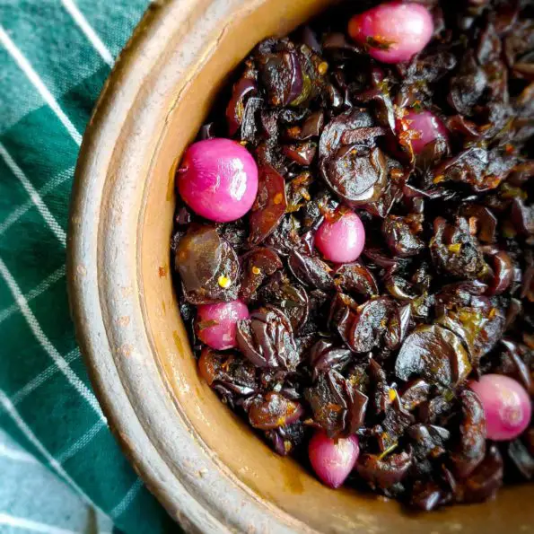

Sri Lankan Eggplant Moju

Sri Lankan eggplant Moju aka Batu Moju is a delicious sweet and
savory eggplant dish that you should definitely make for your
next rice and curry festive menu. This dried version of classic
eggplant Moju is packed with flavor. Really good to make ahead of
time and it can last a really long time without going bad.
I love how every piece of eggplant is a flavor bomb. But what I
love the most about this moju recipe is I can make a big batch at
once and it can last a really long time without going bad. So
whenever I’m going to have guests over, I can make this dish a
week or two ago and put it in the fridge. If you’re a busy
person, you can make this moju in your weekend and enjoy
throughout the week.
Ingredients
For frying
- 500 g Eggplant (asian variety)
- 1/2 tsp Turmeric
-
12 pearl onions/ asian shallots (you can add more or less)
- oil for deep frying
Other
- 1/2 of an onion finely chopped
- 3 green chilies finely sliced
- 3 springs of curry leaves sliced
- 1 1/2 tbsp Maldive fish flakes
- 1 tsp chili flakes
- 2 tbsp Tomato ketchup
- 1 tbsp Vinegar
- 2 1/2 tsp sugar
- 3/4 tsp salt
- 1 tbsp coconut oil
Steps
Fry eggplants and pearl onions
-
Cut about 500g/ 1lb eggplants into thin half-circles (about
2mm thick).
- Mix with a bit of turmeric powder as you cut them.
-
Heat enough oil for deep frying and fry them in small batches
until they are golden and crispy. (please read the
description for more info and tips). Lay them in one layer on
a paper towel to remove excess oil. (Fried eggplants were
weighed about 150g)
-
Also oil-blanch your shallots. Means put the shallots into
your heated oil and leave it for about 10 seconds and take
them out immediately before they turn brown. The color of the
Asian shallots/pearl onions would become a little pale.
Making the Moju
-
Heat about 1tbsp oil in a pan. Then add your onions, chilies,
and curry leaves. Fry the onions until they are golden.
-
Lower the heat. Then add a generous amount of Maldive fish
flakes and chili flakes. Mix with the onions and fry for a
few seconds.
-
Move everything to a side of the pan and add ketchup, white
vinegar sugar, and salt (adjust as per your taste).
-
Mix ketchup, vinegar, sugar, salt and wait till the mixture
heats up.
-
Mix everything in the pan lightly together. Don’t let the
mixture dry out before you add eggplants.
-
Immediately add fried eggplants, and shallots (you can also
add oil-blanched green chilies).
-
Mix with the mixture well together and cook for about a
minute while stirring on low heat.
-
Do a taste test and feel free to add sugar and salt if needed
while the moju is still warm. The dish will taste better the
next day.